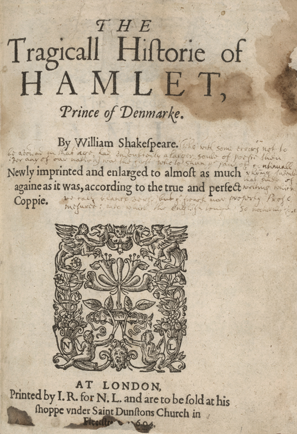
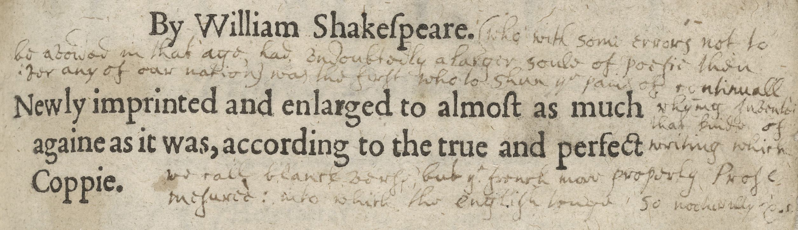

Judging a book by its title page

Sometimes you can judge a book by its title page. Certainly, title pages can tell you how printers and publishers wanted the book to be understood. Early modern title pages served as advertisements of a kind. They were often posted around London for marketing purposes. On Q2 Hamlet’s title page (pictured here), we can see that Shakespeare was named as the author. That was not always the case for the early editions of his playbooks. There is also a clear indication that this edition is in competition with another, earlier edition. Q2 Hamlet appeals to the buyer as a better and bigger text: “Newly imprinted and enlarged to almost as much againe as it was, according to the true and perfect Coppie.” Indeed, Q1 of Hamlet is only half as long and has been referred to as the “Bad Quarto.”
At the bottom of the page, the imprint indicates the location of the bookshop of the publisher, Nicholas Ling. Ling has also been identified as the owner of the decorative “device” on the page.
The title page of the Folger copy of Q2 Hamlet also tells us something about the history of this copy. This copy shows many signs of wear and use. It is now in a handsome Folger binding from 1979. That binding replaced an earlier binding. Presumably, the damage predates the earlier binding, and it may indicate that this playbook spent quite some time without a cover. Some pages are stained and damaged. Others are torn away at the bottom corner. Text is missing in that corner on a number of pages, but someone has taken the time to write in that missing text on repaired pages.
In that same handwriting, an extensive comment is added to the title page. Starting next to Shakespeare’s name it reads (in somewhat regularized form):
(who with some errors not to be avoided in that age, had undoubtedly a larger soule of poesie than ever any of our nation) was the first who to shun the pains of continuall rhyming Invented that kinde of writing which we call blanck verse, but the French now properly [call] Prose, measured into which the English tonge so naturally etc.

This is quite a confident judgment of Shakespeare’s contribution to literary history. The anonymous reader did not reach this conclusion on his or her own, however, but rather copied this passage from John Dryden, who was made England’s first Poet Laureate in 1668. The handwriting, too, which at first appears to be in the early modern secretary style, has been identified as a “pseudo-secretary hand”—in other words, someone wanted it to look older than it was.